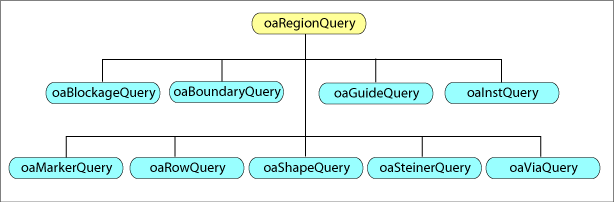

|
 |
 |
||||||
|
|
|
||||||
Region query performance is improved and its usage is simplified. The region query implementation is now through a plug-in. The plug-in provided with OpenAccess uses an X/Y tree for area searches, but other region query implementations are easily added by including a new plug-in in the shared library path. Therefore application performance is not limited to the default region query performance.
A new occurrence shape object is added to OpenAccess to represent the unique occurrences of shapes in a design hierarchy. Each type of shape has a matching occurrence object.
This document contains the following sections:
The plug-in interface uses programming techniques similar to those used in the Microsoft ® COM technology. The region query plug-in provides an interface that is easily updated or replaced. You can initialize the query tree plug-in structure by using the following API:
void oaRegionQuery::init(const oaString &pluginName="oaRQSystem")
Each query is specialized for each OpenAccess object type. The following figure shows the oaRegionQuery subclasses available for object queries.
Each object implements query() functions that include startLevel and endLevel parameters to control hierarchy traversal. You can initialize region query structures for a block and all other blocks bound to it. The call to initialize region query structures in a block is:
oaBlock::initForRegionQuery()
This call usually takes some time, but it is not required. It is provided so users can spawn a process in parallel with other non-interfering tasks that an application performs. If not called explicitly, OpenAccess makes the call internally the first time region query functionality is used.
To perform a region query:
query"Object"() function to add processing code.See the <install_dir>/examples/oa/instQuery directory for a code example that demonstrates how you can implement a region query.
Shape queries are much simpler because special processing of route data is unnecessary. startHeader() and stopHeader() calls are no longer used. Query structures are no longer used for iterating shapes by layer purpose pair (LPP), and query structures are no longer used for iterating references by master. Applications control LPP selection, and instances and vias are no longer organized by master.
oaOccShape is an abstract base class for all occurrence shapes. It is similar to oaShape, but oaOccShape is not editable. Occurrence shapes do not represent new data. They are transient objects that are created on demand, which helps to maintain a small virtual memory size. These objects have read-only access, so no property or group can be assigned.
oaOccShape is useful for representing and referring to specific occurrences of shapes in the hierarchy. You access occurrence shapes via a region query using:
oaShapeQuery::getOccShape()
You use class methods as if data is virtually flat. Applications are responsible for managing query objects. These query objects stay resident until the application frees them. To free memory, you use:
oaOccShape::release()

Copyright © 2003-2010 Cadence Design Systems, Inc.
All rights reserved.